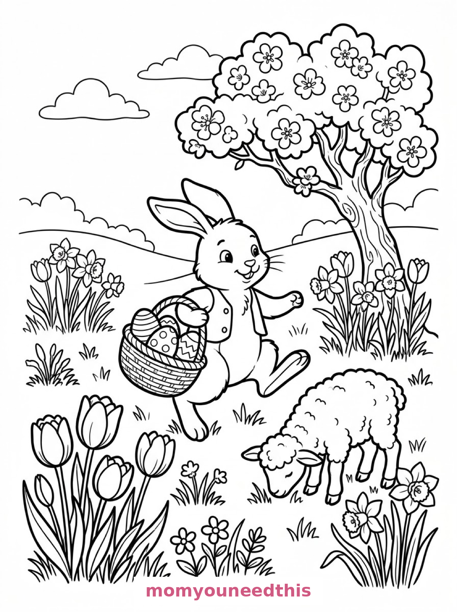
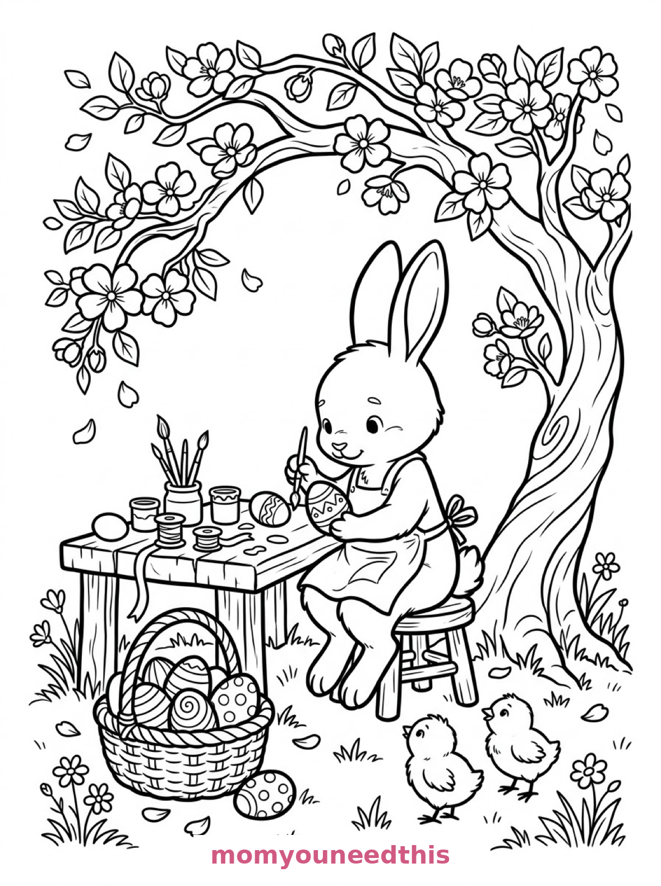
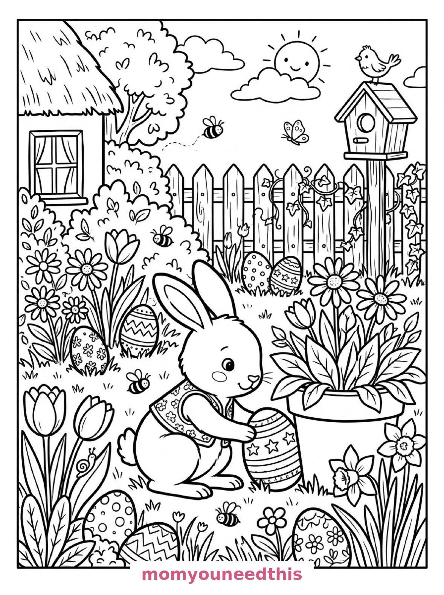

Free Easter Bunny Coloring Pages Meadow, Egg Painting & Egg Hunt Printables
These free easter bunny coloring pages follow one busy bunny through the season's sweetest moments — hopping through a spring meadow with a basket of eggs, painting patterns at its workbench, and tucking eggs away on an egg hunt. Download the set below, print at home on letter-size paper, and let the coloring fun begin. No signup needed.
Last updated: October 23, 2026
Quick Answer
Yes — this page has three free printable easter bunny coloring pages: a bunny hopping through a meadow with a basket of decorated eggs, a bunny painting eggs at a workbench under a blossom tree, and a bunny hiding eggs in a cottage garden egg hunt. Bold outlines and big spaces, made for little hands. Download, print on letter-size paper, and hand over the crayons — no signup, no cost.
At a Glance
- Ages: 3–8
- Pages: 3 free printables
- Format: Print at home, letter size
- Cost: Free, no signup
- Supplies: Crayons or markers
- Time: 10–20 minutes
🐰 Bunny in the Spring Meadow Coloring Page

🎨 Download Your Free Meadow Bunny Coloring Page
A bunny hops through a spring meadow carrying a woven basket of decorated eggs, with tulips, daffodils, a grazing lamb and a blossom tree — bold outlines, big spaces, zero signup.
⬇️ Download Free Meadow Bunny Page 🖨️ Print Meadow Bunny Page🎁 Free printable for preschoolers & kids
🎨 Bunny Painting Easter Eggs Coloring Page

🎨 Download Your Free Egg Painting Coloring Page
A bunny sits at a workbench under a blossom tree painting patterns on eggs, with pots, brushes, ribbons, a basket of finished eggs and two small chicks — bold outlines, big spaces, zero signup.
⬇️ Download Free Egg Painting Page 🖨️ Print Egg Painting Page🎁 Free printable for preschoolers & kids
🧺 Easter Egg Hunt in the Garden Coloring Page

🎨 Download Your Free Egg Hunt Coloring Page
In a cottage garden at egg-hunt time, a bunny tucks a decorated egg behind a flowerpot while more eggs nestle in the grass and flowerbeds — bold outlines, big spaces, zero signup.
⬇️ Download Free Egg Hunt Page 🖨️ Print Egg Hunt Page🎁 Free printable for preschoolers & kids
More Coloring Pages
Tap any picture to open its theme page and download the free printable.


🐰 How To Use This Page
- Browse the three designs and pick the Easter bunny scene your child will love most.
- Tap download or print under that design — the file opens full-size, ready for letter-size paper.
- Print a couple of copies of the egg-hunt garden — kids love hiding the eggs in different colors.
- Color together with crayons or markers and display the finished pages.
🐣 Why Kids Love Easter Bunny Coloring Pages
The Easter bunny is one of childhood's friendliest characters, and these pages let kids visit it in three full scenes instead of one pose. A basket of eggs to fill with patterns, a workbench full of paint pots, and a garden hiding eggs in the grass — every design hands your child the decision-making job: which egg is purple, which flower is yellow, and what color is the blossom tree?
That choice is the point. An Easter bunny page never comes out the same twice, so the same three designs can keep a child busy all through spring — and each version looks completely different on the fridge. Big bunny shapes keep little hands confident, while the eggs, flowers and background details give older kids something to linger over.
🌷 Meet the Three Easter Bunny Scenes on This Page
The bunny in the spring meadow. A bunny hops through a meadow carrying a woven basket of decorated eggs, with tulips and daffodils blooming around it, a lamb grazing nearby and a blossom tree behind. It is the warmest, happiest page in the set — the bunny is one big, bold shape, while the basket eggs are perfect for practicing zigzags, dots and stripes.
The bunny painting Easter eggs. A bunny sits at a workbench beneath a blossom tree, painting patterns on eggs with pots, brushes and ribbons laid out, a basket of finished eggs beside it and two small chicks watching. This is the page for kids who love details — every egg in the basket is a tiny blank canvas inside the bigger one.
The egg hunt in the garden. In a cottage garden at egg-hunt time, a bunny tucks a decorated egg behind a flowerpot while more eggs nestle in the grass and flowerbeds, with a picket fence and a birdhouse behind. It is the most story-like page in the set: kids can count every egg on the page, then color each one a different color.
✏️ Easter Bunny Coloring Tips
- Give every egg its own pattern. Stripes on one, dots on the next, zigzags on the third — patterned eggs are the best part of any Easter bunny page.
- Color the blossom tree pink or white. Or go wild and make it purple. Blossom trees are a lovely first lesson that spring colors can be anything a child imagines.
- Use the chicks as a color test. The two chicks on the painting page are small and quick — perfect for trying a new color before committing to the big bunny.
- Print the egg-hunt page twice. One copy for “daytime” colors, one for “sunset” colors — a fun way to practice light and shade without any instruction.
🐰 Coloring Pages for Different Ages
For ages 3 to 4, start with the meadow bunny. The bunny is one big central shape, the basket is a satisfying chunk to fill, and the flowers can be colored in any order. Scribbled tulips are still tulips at this age.
For ages 5 to 6, the egg-hunt garden is the sweet spot. Counting the hidden eggs, choosing a color for each, and filling the flowerbeds and fence is a real project with a clear finish line.
For ages 7 to 8, hand over the painting workbench. The paint pots, ribbons, blossom leaves and individual egg patterns reward patience, and older kids often turn the finished-egg basket into a full inventory of their own designs.
🌷 More Easter Fun After Coloring
Turn the three pages into a spring story: line them up — meadow, workbench, egg hunt — and ask your child to tell you what happens between them. Where do the painted eggs go? Who finds them in the garden? Write their story on the back of the pages for a keepsake.
These are everyday bunny scenes from the Easter season, so they pair perfectly with the Easter coloring pages — egg hunts, baskets and chicks — for a full spring set. And when Easter is over, the bunny coloring pages keep the same bunnies going with garden carrots and apple orchards instead of eggs.
🔗 More Free Printables You’ll Love
- Free Easter Coloring Pages Egg hunts, baskets and spring bunnies to print and color.
- Free Bunny Coloring Pages Garden, burrow and orchard bunnies to print and color.
- Free Spring Coloring Pages Flowers, butterflies and spring scenes for little learners.
- All Free Coloring Pages Browse every free coloring page on the site, organized by theme.
❓ Easter Bunny Coloring Pages FAQ
Are these easter bunny coloring pages really free?
Yes — all three designs on this page are free original printables from MomYouNeedThis. Download them, print them at home, and color — no signup and no cost.
What ages are these coloring pages best for?
Kids ages 3 to 8 get the most from this set. The meadow bunny is the gentlest start for younger children, while the painting workbench and egg-hunt garden have the detail older kids enjoy.
How do I print a coloring page?
Tap the download button under the design you want, then print the file on regular letter-size paper. The print button opens the full-size page in a new tab if you prefer to print from there.
Are these the same as the Easter coloring pages on this site?
No — this page is all bunny, with three scenes built around one Easter bunny. The Easter coloring pages cover the whole holiday: eggs, baskets, chicks and spring scenes. The two sets are made to sit side by side, not repeat each other.
Can I make an Easter coloring book from these pages?
Yes — print all three designs, stack them in order, and staple along the left edge. Add a cover sheet with your child's name for a finished homemade Easter bunny coloring book.